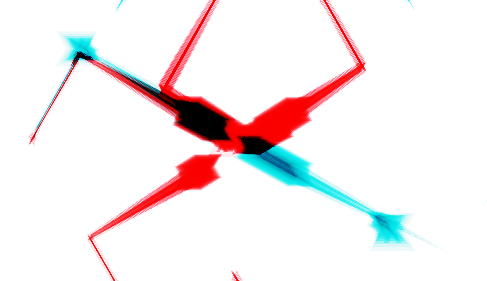
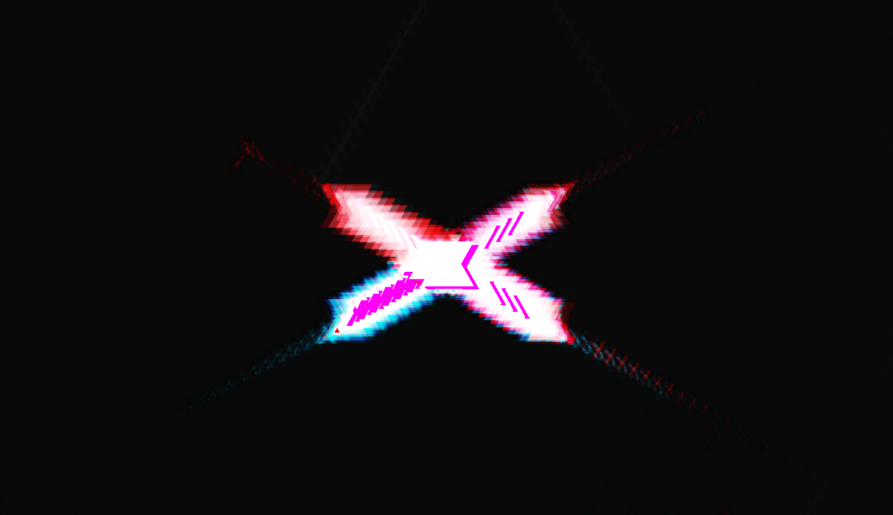
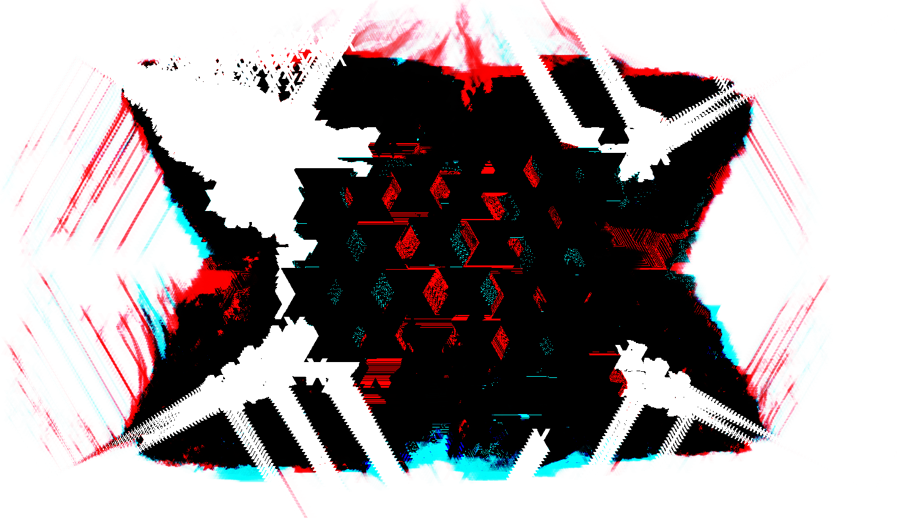
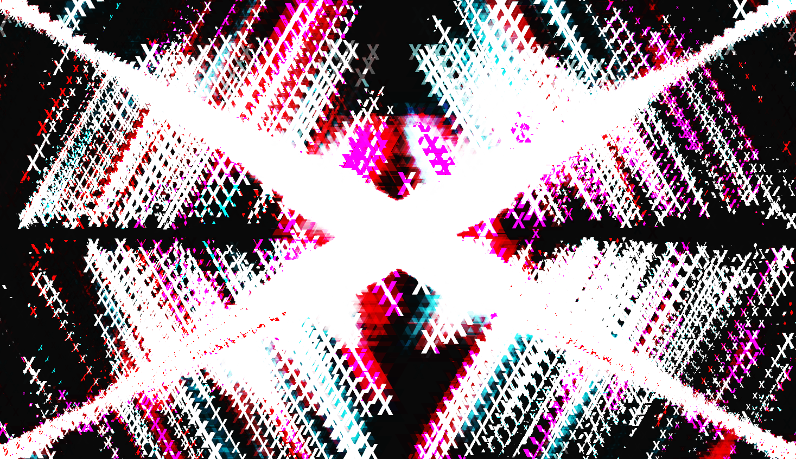
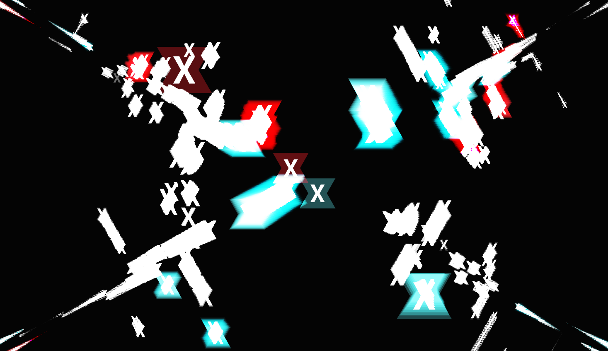
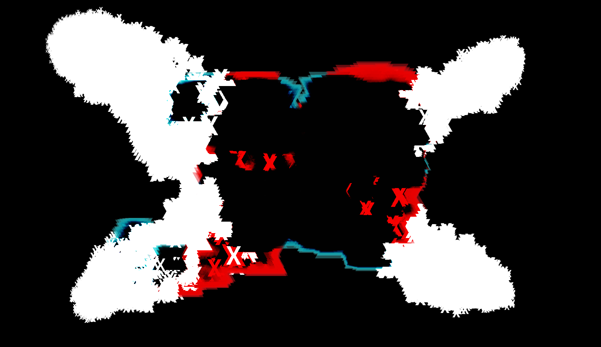

Interactive p5.js Animations for X-Journal
While working for X-Journal, as their designer and photographer, I also
created a series of interactive p5.js animations. The goal of this project was to design visually striking,
motion-driven promotional material to increase student submissions.
Using p5.js, I developed dynamic generative animations that reflect the magazine's
The animations were intentionally minimalist, leveraging motion, rhythm, and color to capture attention without relying on traditional graphic design layouts.
experimental and modern identity. The visuals were left slightly abstract, with an x visible at all times.
These visuals were optimized for digital distribution
and embedded media, making them suitable for use on social platforms, mailing lists,
and the X-Journal website.
// supports real-world student-driven publications.



